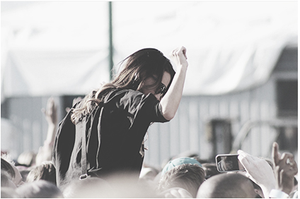
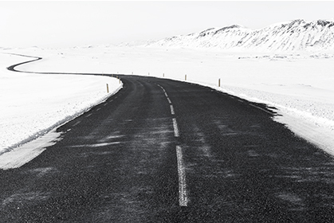

The perfect weekend getaway
Travel the Text offers Biblical Study Trips to the lands of the Bible.
We engage the Text in its original context through the on-site study of biblical culture, history, language, geography, and literature.
Join us on an upcoming educational trip to challenge your heart, mind, and body on an incredible pilgrimage as we travel the Text, allowing the land and Spirit to be the greatest teachers of all.
|

Thông thường, khi tạo một cái bảng thì số ô trên mỗi hàng bằng nhau. |
Để gộp các ô theo chiều ngang thì chúng ta đặt thuộc tính colspan vào bên trong thẻ mở của cái ô mà ta muốn bắt đầu gộp nó với những ô nằm phía bên phải. |
|
Thông thường, khi tạo một cái bảng thì số ô trên mỗi hàng phải bằng nhau. |
Để gộp các ô theo chiều ngang thì chúng ta đặt thuộc tính colspan vào bên trong thẻ mở của cái ô mà ta muốn bắt đầu gộp nó với những ô nằm phía bên phải. |
Sign up for newsletter!
hôm nay là thứ 3
|
Thông thường, khi tạo một cái bảng thì số ô trên mỗi hàng phải bằng nhau. |
 Để gộp các ô theo chiều ngang thì chúng ta đặt thuộc tính colspan vào bên trong thẻ mở của cái ô mà ta muốn bắt đầu gộp nó với những ô nằm phía bên phải. |